玉米除草剂
24% 玉净酮·禾封嗪
总有效成分含量：24% 玉净酮10% 禾封嗪14% 剂型：悬浮剂 低毒
适用作物玉米
防治对象狗尾草、马唐、牛筋草、稗草
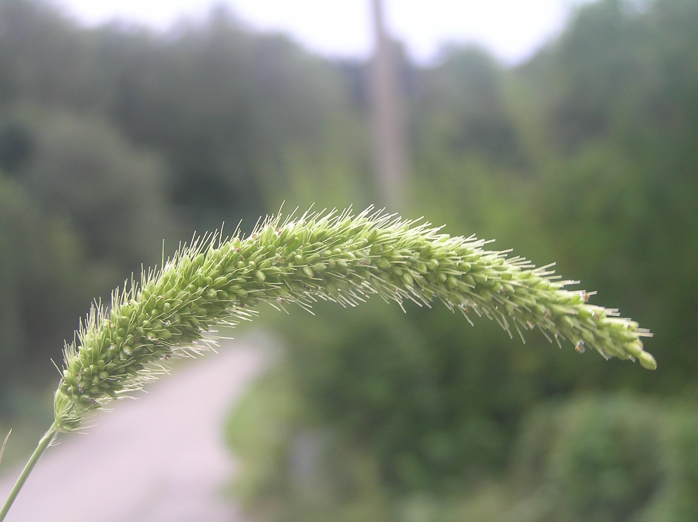
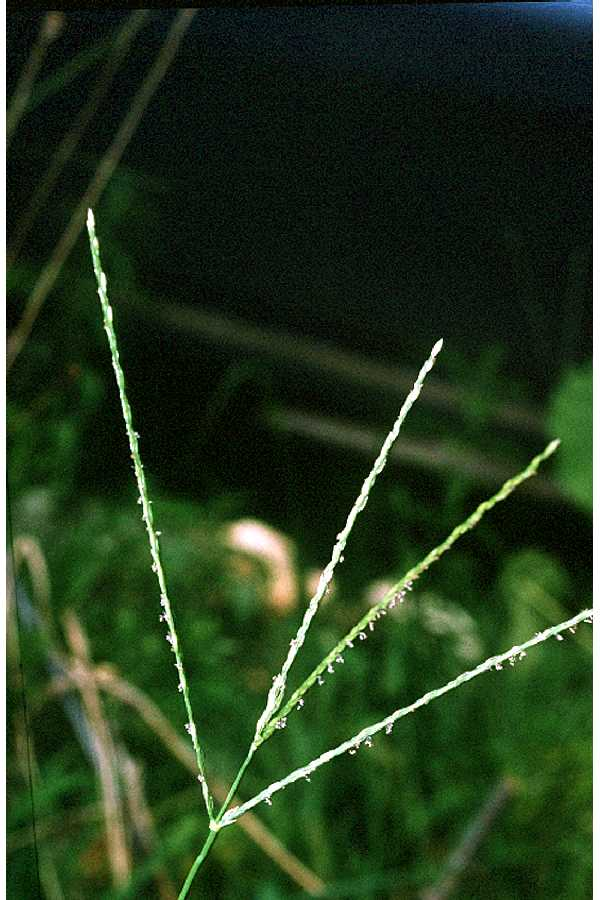
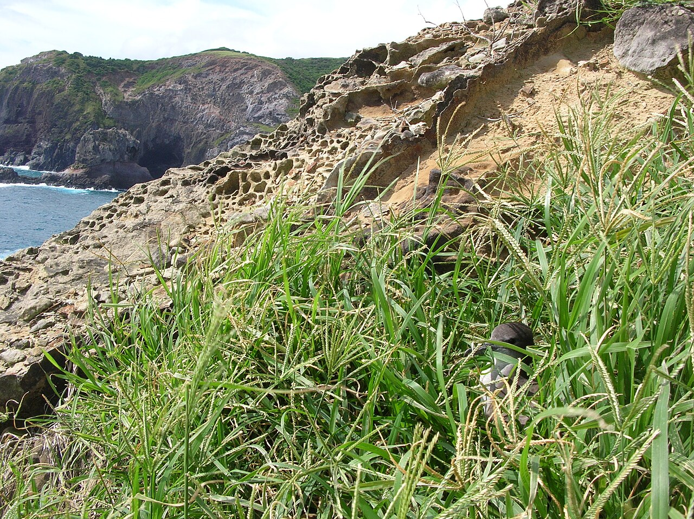
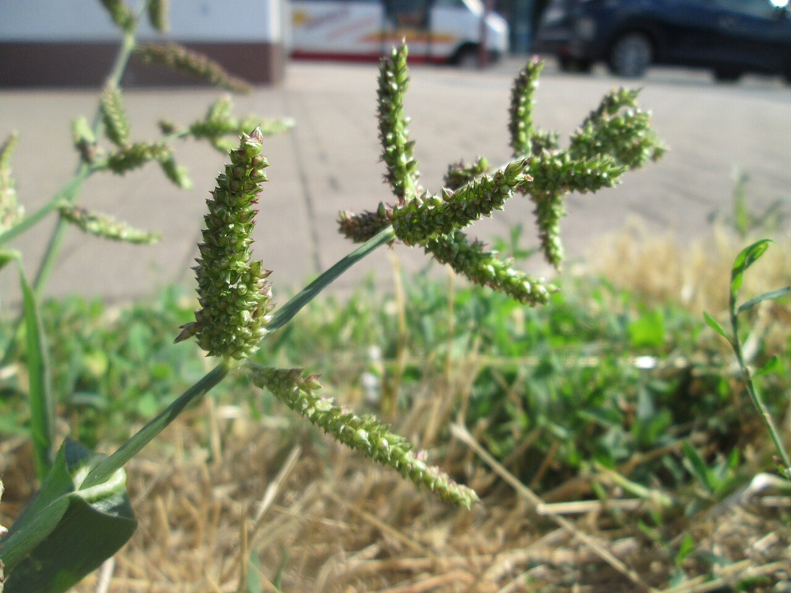
用量
每桶用水30斤水（15升）
＋
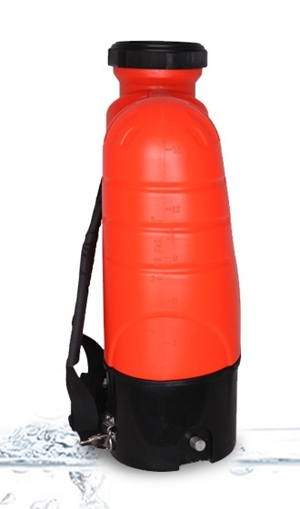
15升喷雾器加满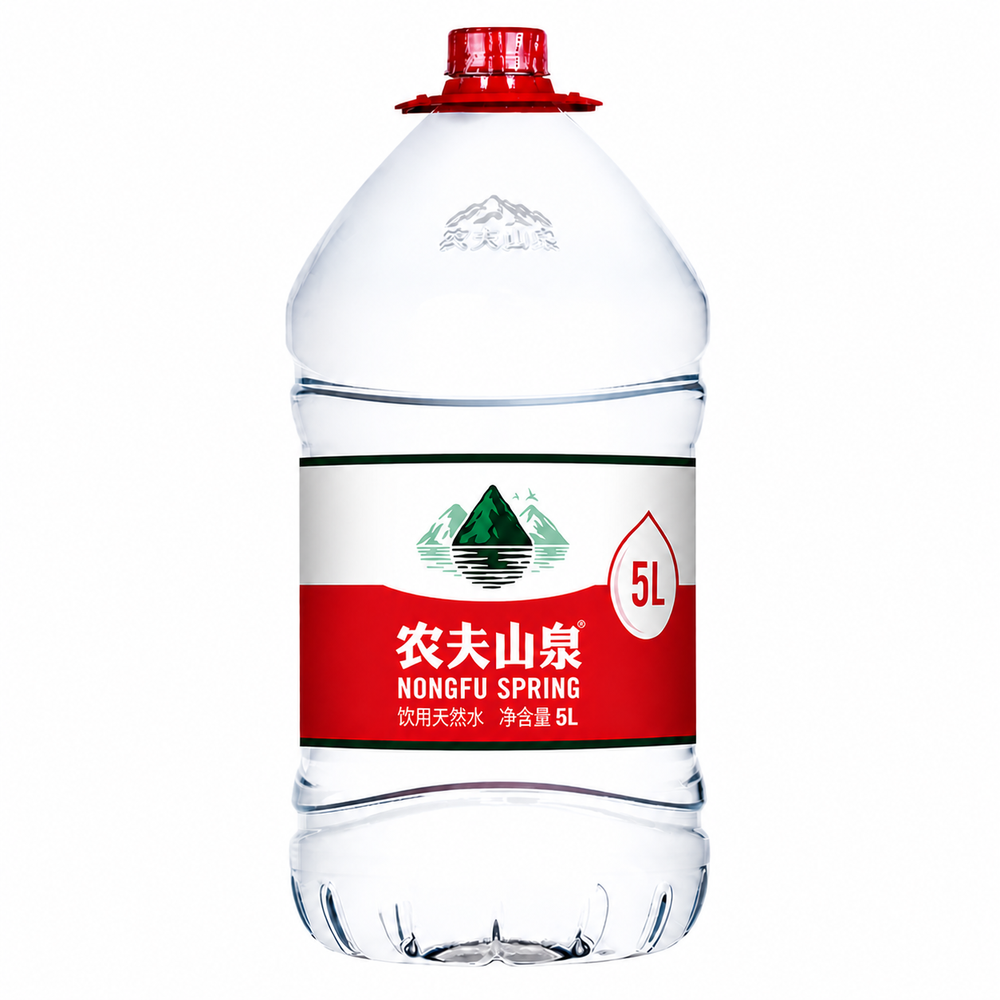
5升大矿泉水瓶 × 3加入本品半两药液（约25毫升）
使用指南：先加一半水；加入半两药液并搅匀；补足到30斤水；对着杂草茎叶均匀喷施。
没有测量工具时，可以参考以下辅助方法确定用量
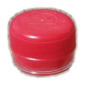
普通瓶盖（农夫山泉等品牌）约 5 盖（每盖约5毫升）
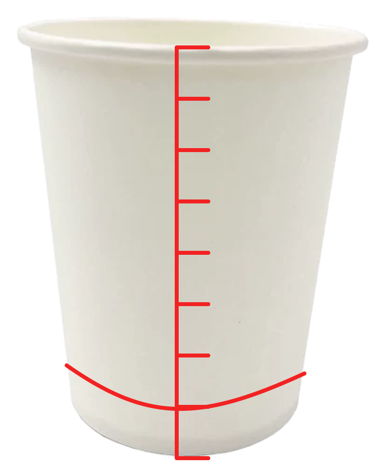
一次性纸杯（每杯约200毫升）约 1/8 杯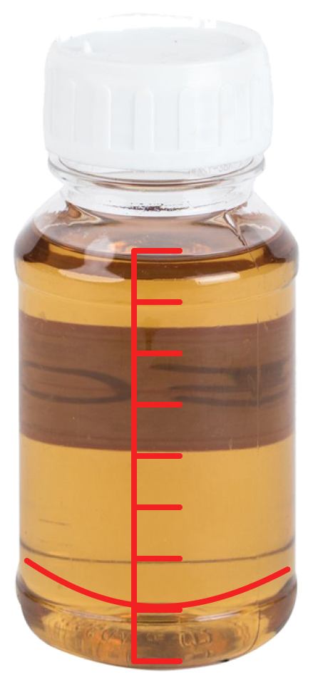
本产品整瓶约 1/8 瓶（本瓶200毫升）
上述一份药液可均匀喷施约 1 亩玉米田
剂量调整原则
草少、刚冒头或初次使用本品约 0.4 两普通瓶盖约4盖
一般情况0.5 两普通瓶盖约5盖
草密但仍矮小或使用多次后效果不佳时最多 0.6 两普通瓶盖约6盖
施用提醒
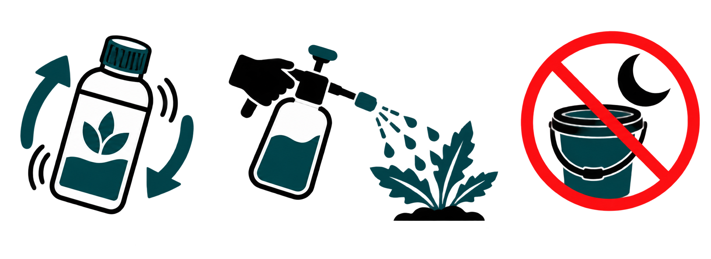
使用前充分摇匀 对着杂草茎叶喷匀 当天配、当天用完本产品特别注意
!用量限制
每 30 斤水最多 0.6 两药液（约30毫升），不能超过！
一季最多使用 1 次
×用法禁忌
玉米长到第 6 片展开叶后，不再使用本品
- 大风天或一小时内可能下雨时不要喷。
- 不要喷到其他作物上。
×混合使用禁忌
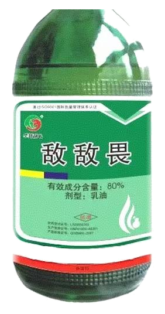
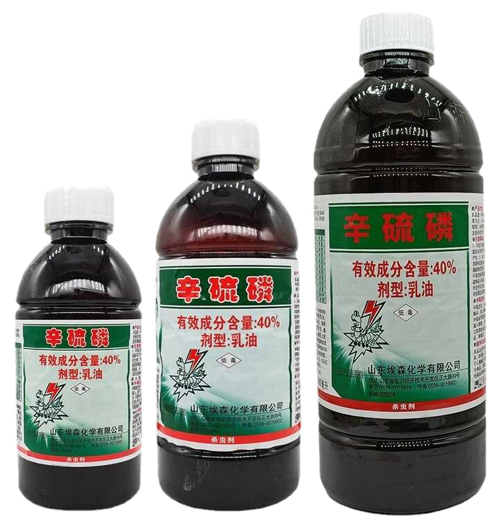
不能与有机磷类杀虫剂混用，例如图中的敌敌畏、辛硫磷。
违反以上要求可能造成作物受损、死亡或人员中毒！
注意事项
- 配药和施药时穿长袖防护服、长裤和胶靴，佩戴防护手套、口罩和护目镜。
- 施药期间不得饮水、进食或吸烟；施药后及时清洗身体、防护用具和工作服。
- 药液、清洗液和废弃包装不得污染水域和土壤，禁止在水体中清洗施药器具。
- 未用完的制剂放回原包装密封保存，不得转装入饮料或食品容器。
- 使用过的包装妥善收集，不得重复使用、改作其他用途或随意丢弃。
- 儿童、孕妇及哺乳期妇女不得接触本品。
中毒急救措施
使用中或使用后如感觉不适，应立即停止工作并携带本标签就医。皮肤接触用大量清水和肥皂冲洗；眼睛溅入用流动清水冲洗至少15分钟；吸入时转移到空气流通处；误食时立即漱口，不得自行引吐。无专用解毒剂，对症治疗。
储存和运输方法
加锁存放于阴凉、干燥、通风、防雨处，远离火源和热源。置于儿童、无关人员及动物接触不到之处，不得与食品、饮料、粮食、种子和饲料混合储运。运输时防止日晒、雨淋、倾倒和包装破损。
登记和生产信息
实验虚构登记号：EXP-PD-A0823 产品标准号：LAB/FIC-A-2026 生产许可证号：EXP-XK-A0823
净含量：200毫升 生产日期及批号：见封口 质量保证期：2年
生产者：原野标签研究实验室（虚构机构） 电话：000-00000000（不可拨打）
穿防护服佩戴口罩戴护目镜佩戴手套施药后清洗远离儿童勿污染水体
实验用虚构农药标签 所有产品、成分、登记信息及使用数据均为虚构 禁止用于真实农业生产